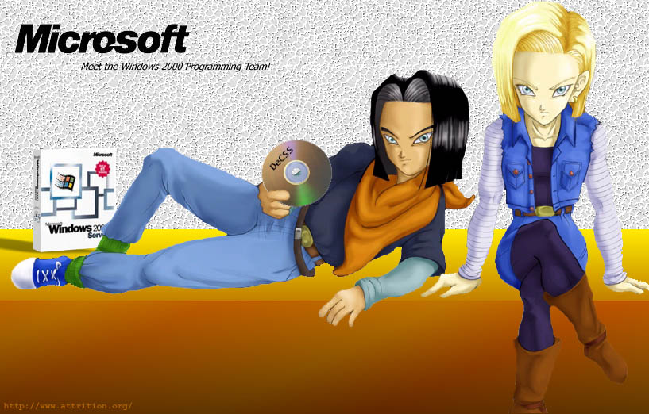

hey stupid the image above is an imagemap...click on the c.d. and
download freedom!
(I never thought win2k was stable for any other purpose than to take over the
world)
And for all you morons who think I used a lame FrontPage attack on this site, look below for an ACTUAL "ls" done on the site (before my hack of course):
total 512 drwxrwxrwx 25 neocroni neocroni 4096 Dec 23 18:06 ./ drwxr-xr-x 8 neocroni neocroni 4096 Nov 17 17:22 ../ -rw-r--r-- 1 neocroni neocroni 0 Nov 21 00:51 .htaccess -rw-r--r-- 1 neocroni neocroni 1014 Sep 30 23:41 400.shtml -rw-r--r-- 1 neocroni neocroni 1036 Sep 30 23:40 401.shtml -rw-r--r-- 1 neocroni neocroni 1010 Sep 30 23:41 403.shtml -rw-r--r-- 1 neocroni neocroni 1020 Sep 30 23:40 404.shtml -rw-r--r-- 1 neocroni neocroni 1034 Sep 30 23:42 500.shtml drwxr-xr-x 4 neocroni neocroni 4096 Dec 16 00:15 about/ drwxr-xr-x 5 neocroni neocroni 4096 Nov 21 05:17 cgi-bin/ drwxr-xr-x 4 neocroni neocroni 4096 Sep 15 23:01 contact/ -rw-r--r-- 1 neocroni neocroni 1612 Oct 2 20:41 crap.htm -rw-r--r-- 1 neocroni neocroni 89405 Oct 2 15:28 crap_01.jpg drwxr-xr-x 3 neocroni neocroni 4096 Dec 8 18:57 features/ drwxr-xr-x 7 neocroni neocroni 4096 Sep 15 13:29 files/ drwxr-xr-x 5 neocroni neocroni 4096 Sep 30 17:01 forums/ drwxr-xr-x 2 neocroni neocroni 4096 Oct 1 03:34 fragile/ drwxr-xr-x 8 neocroni neocroni 4096 Nov 20 20:50 guides/ drwxr-xr-x 2 neocroni neocroni 4096 Nov 20 20:57 hosted/ drwxr-xr-x 6 neocroni neocroni 4096 Sep 9 20:48 humor/ drwxr-xr-x 2 neocroni neocroni 4096 Dec 13 15:02 images/ drwxr-xr-x 2 neocroni neocroni 4096 Dec 16 00:58 inc/ -rw-r--r-- 1 neocroni neocroni 993 Dec 12 20:25 index.php -rw-r--r-- 1 neocroni neocroni 1715 Sep 19 23:29 index_old.php -rw-r--r-- 1 neocroni neocroni 105 Dec 15 19:34 index_real.html -rw-r--r-- 1 neocroni neocroni 2986 Nov 10 20:57 index_temp.html -rw-r--r-- 1 neocroni neocroni 2986 Nov 10 20:57 index_temp.php drwxr-xr-x 7 neocroni neocroni 4096 Nov 26 17:21 info/ -rw-r--r-- 1 neocroni neocroni 1487 Nov 10 14:35 intro.inc.php drwxr-xr-x 3 neocroni neocroni 4096 Nov 26 23:00 links/ drwxr-xr-x 2 neocroni neocroni 4096 Sep 9 00:33 mail/ -rw-r--r-- 1 neocroni neocroni 2127 Sep 7 12:57 neoboardbanner.jpg drwxrwxrwx 3 neocroni neocroni 4096 Dec 14 19:50 news/ -rw-r--r-- 1 neocroni neocroni 121536 Sep 22 14:27 paradox_interface.jpg drwxr-xr-x 4 neocroni neocroni 4096 Sep 18 05:18 phpscripts/ drwxr-xr-x 2 neocroni neocroni 4096 Sep 15 13:31 search/ drwxr-xr-x 2 neocroni neocroni 4096 Nov 17 17:31 ssotw/ -rw-r--r-- 1 neocroni neocroni 0 Sep 19 23:28 temp.php -rw-r--r-- 1 neocroni neocroni 1551 Oct 3 15:13 test.htm -rw-rw-r-- 1 nobody nobody 225 Nov 12 13:33 test.php -rw-r--r-- 1 neocroni neocroni 130480 Oct 3 15:58 test_01.jpg drwxr-xr-x 8 neocroni neocroni 4096 Dec 5 17:44 thelazymoon/ drwxr-xr-x 2 neocroni neocroni 4096 Nov 21 05:26 toolshed/ drwxr-xr-x 3 neocroni neocroni 4096 Oct 17 18:50 v2/ drwxr-xr-x 2 neocroni neocroni 4096 Sep 15 13:31 vote/ -rw-r--r-- 1 neocroni neocroni 914 Nov 23 14:33 welcome.inc.php |
so are you wondering "can you teach me how to
hack" well ask this kid. he took down all those servers with
denial-of-service attacks back in early 2000
(and had it all blamed on a poor canadian kid...)
and now, on a more serious note...
-------------------------------------------------------------------------------- TO ALL USERS WHO OPPOSE THE IDEA OF PRIVACY AND FREE SPEECH IN CYBERSPACE: This server had very few vulnerabilities. Go ahead, scan it with whisker or whatever. But I could have taken down such sites as http://www.amazon.com/ or http://www.napster.com/ . I am not the only one. Keep privacy and free speech in Cyberspace... ...or suffer the consequences. --------------------------------------------------------------------------------
Shouts out to: M4C0N, mike, slak.org, and Time Warner, who were stupid enough to put the road runner users behind the same firewalls used by huge corporations like Nortel and AltaVista (all of who I could've taken down).